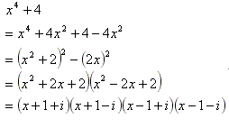
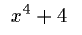
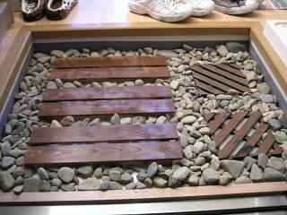
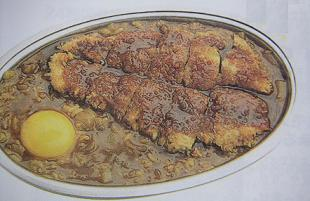

日々、想ふ
〜過去感じたことがつれづれと〜
（できるだけ最大化してお読みください）
一覧へ
本当の終わりはいつやって来る？２/２９
昨日の日記
の時に出した問題の答えはこれです、(x+1+i)(x+1-i)(x-1+i)(x-1-i)
詳解は以下の通り。

この問題を解くポイントは２行目です。
ってこんな問題初めて見る人間には絶対解けないと思う。
そんな理不尽な問題をいきなり課された男、タケユキです。
もうほんとこういう問題はやったことあるかないかの問題。
こんなって数学じゃない、ただの暗記じゃんけ、
と僕は言いたい。
と、塾のバイトの話はここまでにしておいて今日
はレストランの方のバイト関係の話。
昔バイト先のレストラン
へ行く途中に
ずっと閉店セールしてる店があるって
話をしたんですが、今日通りかかったらまた普通に営業してた、
でっかく
「閉店セール」って看板かかげて。
でも今日はいつもと違った。
でもその違いはついに本当に閉店するっていうわけじゃない。
「長い間ありがとうございました！」
「ついに最後の大処分！」
そういう店員さんの横にひとつの見慣れない看板、
「時計の電池交換・修理始めました」
今日の看板：いくらなんでもひどくないか。
口座開設。２/２８
以下の数式を複素数の範囲で因数分解しなさい。

塾でこの問題やってと言われちょっとパニックでした、タケユキです。
昨日は塾の、今日はレストランの給料日でした。
てなわけで今多少なりとも財布重たいわけですが
これからは貯金を
しようと思います。
今まで手元には生活費下ろすだけの郵便局の
口座しかなかったわけです。
つまり給料は現金のまま家に。
「まだあるまだある」そんな風に生きてたら
いつの間にか
タイ旅行に換算すると４回分のお金が
知らぬ間に手元から飛んでいってました。
屋根まで飛んだみたいです。
屋根まで飛んで
こわれて消えたみたいです。
つまり手元に多少のお金があることが問題だと思い
昨日
UFJに行って口座を開いてきました。
それにしても銀行って
おっかないね。なんか俺らが行くような雰囲気じゃない。
普通のやつじゃまず秒殺、逃げ帰るね。俺だから窓口までたどり着けたようなもの。
ほんとは銀行入ってどうしていいかわからない顔してたら
案内の人が全部教えてくれたんだけど。
用紙に分かる範囲だけ書いて順番待ちの紙を取る。
少ししたら番号を呼ばれて未開の地窓口へ。
そこのお姉さんが優しくて（仕事だから当たり前か）いろいろ説明してくれた。
今俺が読んでる本「死ぬまでにしたい１０のこと」を
待ってる間読んでたのを見てて
「あたしこれ映画見ましたよ〜」
関係ない話もいろいろしてくれた。
「ここってほんとに銀行か？新手のそういう店じゃないよな？」ってちょっと疑った。
でもちゃんと手続きすんだら通帳くれた、ほんとの銀行だったみたいだ。
そんなわけでこれからは多かれ少なかれ毎月貯金をしようと思う。
今日の決意：２回預けて１回下ろすのペースで貯金。
冒頭の問題：明日解答載せます。
この日は。２/２７
この日の更新できませんでした、タケユキです。
別にネタがなかったわけでなくただ単に人が来てた。
日記の更新ができてないもしくは更新が深夜の場合は
誰かうちに来てるんだなぁと思ってください。
日記を更新してる姿ってのは
芸人がネタ作りしてるのと同じようなもので
人に見られるのは恥ずかしいもんなわけです。
そんなわけでこの日は更新できませんでした、あしからず。
今日の一言：単にネタ切れの時もある。
酒。２/２６
広島の友達が大阪に来てたらしい。
それで道が分からんみたいなメールがきてて
「道頓堀にでも行きたいのか」って思ってたら
「GAPってどこ？」って聞かれた。
わざわざ広島から大阪来てるのにGAPに行く必要性がわからない。
どうせならカニ道楽のカニとか食い倒れ人形見ろっての、タケユキです。
まあそんなアホな話はどうでもいいんですが
今日
夕方からバイト行ってきました。
一生懸命がんばりました。
終わりました。
帰りに友達と酒飲みました。
というわけで顔真っ赤になって更新中。
そんな状態でいい文章が書けるわけがないんです。頭が回らないんです。
酒飲んで頭回るわけねえっての！
もともと頭は
回るようにできてないっての！
今日の酒：変な文章なのは俺は悪くありません、酒が悪いんです、ぜったい。
劇的ビフォーアフター。２/２５
アジアンテイスト部屋作り、一歩前進、タケユキです。
京都に行きました、石を拾いに行くため
だけに。
以前川に石を取りに行こうとしてチャリで出発したら
タクシーに跳ねられたので
今度はタクシーなんぞ相手にならないような乗り物、電車で出陣、
来るなら来い、タクシー。返り討ちにしてくれる。
一言石と言っても僕の必要としている石っていうのは
玉砂利って呼ばれる神社とかにあるような丸い石で、
ただ川に行ってもなかなか見つからない。
そういう話をしていたら
高校時代の友達が
「（京都の）鴨川にならあるよ」って言ってたので
バイトが休みだった今日行ってきました。
もともと石を集める目的は「玄関に敷き詰める」だったので
かなりの量を集め、かばんに詰め込む。
この石が重たいのなんのって。
はっきりした重さはわからんかったけども２０kgはあったはず。
見た目普通のカバン、でも激重。
そんなカバンを引きずるようにして電車に乗り込みなんとか帰宅。
というわけで公開、うちの玄関の劇的ビフォーアフター！

アフター
石を玄関にバラまいた後にビフォーの写真を撮ることを
忘れてることに気付きました。
今日の玄関：もうちょっと石がほしい。
炊飯器。２/２４
もう、限界です、タケユキです。
２０日の日記で
炊飯器なくても生きていけるって話したんだけど、
もう無理、正直しんどい。
その物（人）の大切さというのは失ってから初めて気付くとは
よく言ったものですがそれを炊飯器で体験するとは思わなかった。
というわけで新しい炊飯器買って来ました。
ほんともう炊飯器超大事。
炊飯器なくても米は炊けるんだけども、
鍋で米炊いて楽しいのは一回だけ。
鍋で米を炊くと高確率で底が焦げる。
しかも炊飯器と違いこ米炊けたからって
「米、炊けたよ」なんて言ってくれない。
まあ普通の炊飯器は「米炊けたよ」なんて喋ったりはしないけど。
だからって俺の炊飯器も喋らないけど。
まあつまりなんだ、今日の日記は
文明最高！そんな話でした。
今日の新計画：壊れた炊飯器は近日中にオブジェになります。
間違い電話。２/２３
間違えたわけです、タケユキです。
しかも携帯電話での間違い電話っていうのは
家に備えつきの電話で起こる間違い電話と違って
メモリに登録してある知り合いに間違えて
電話してしまう、そういう間違い電話、誰でも一度は経験あると思います。
事の発端は２/２３日午前３時。
こたつで寝る一人の大学生。
指先に何度も触れる何か。
薄い意識の中でそれが何かと調べ始める。
カチッ、カチッ
どうやらボタンがついているらしい。
半分眠っている頭で考える、
「・・ボタンがついてる物なんか近くにあったっけ？」
マウスにしては小さいし、リモコンとも違う。
「なんか他にそれっぽいのあったっけ・・？」
耳元で響く電子音、
プルルルルルルル・・
「ケータイか！」
飛び起きてすぐに電話を切る、でも時すでに遅し。
そんな仲良くない人にかけてたとしたら
後々
無駄に気を遣わないといけない。
眠気が一気に吹っ飛び急いでリダイヤル画面を表示、
暗闇の中光を放ち浮かびあがる一人の名前、
「
３丁目
１１の１」、たぶん初めてだと思う、
３丁目１１の１に感謝するのは。
この３丁目１１の１、人間的にかなり珍しいこともさることながら
名字が全部母音っていうけっこう珍しいものを持ってるわけです、
そのうえ最初が「ア」だから基本的に出席番号は１番ってやつ。
そうなると自然とメモリの一番上に登録されてるわけで。
それでたまたまかかったのが３丁目１１の１だってことみたい。
ほんとに３丁目１１の１には感謝です、
「ア」から始まる名字でありがとう。
そんなわけでリダイヤル画面を見て、
「（ほっといても）まあいいか」
って眠りに入ったわけです。
それで今日の朝ケータイが鳴ってるのに気付くと３丁目１１の１からの着信。
間違い電話でしたってちゃんと正直に、かつおちゃめに話したのに
「お土産かに道楽のカニな」
理不尽に高いものを要求された。
今日学んだこと：寝るときケータイは遠くに置こう。
こんな日々を過ごしたい。２/２２
いつもより暖かい日でした、タケユキです。
というか雨だった。
最近雨が降ることがなかったとはいえ
日ごろのうっぷんを晴らすかのごとく降る雨。
普通の雨を「雨」というなら今日のは「超雨」と言っても過言ではないくらい降った。
そんなわけで今日は家でごろごろしてました。
春休み、大学生。
時間は他の人より多くあるこの時期、
遊びまくるのもいいでしょう、
バイトに励むのもいいでしょう、
でもたまには時間というものを、
よく言えば贅沢に、悪く言えば無駄に
使ってみるのも今しかできないことだと思います。
一日ゆっくりして「また明日からがんばろう」
そう自分を
励ますということも必要だと思います。
明日からがんばることがない俺はただ途方にくれるだけですが。
今日を振り返って：平穏な一日でした。
世間の荒波。２/２１
バイトがありました、タケユキです。
ここを見てる人がどうかは分かりませんが僕は
中学、高校とアルバイトの経験のないまま大学生になりました。
世間一般に言う「甘やかされて育った」といわれる部類の人間なわけです。
つまり社会について何も知らない、と
世間様の目はそういう冷たい目で俺を見るわけです。
そういう人は大学生になってからのアルバイトで
社会というものを初めて自分の目で、肌で、垣間見ることになります。
理不尽に怒られたり、
自分は悪くないのに謝らないと
いけなかったり。
要するに社会勉強というものをするわけです。
でも確かに社会という場に出る経験がなかったわけだから
怒られるのにも社会の暗黙のルールを守れてないということ
があるのかもしれません。
でも！納得いかないのが一つある。
社会というのは広いもので仕事にもいろいろ種類があります。
その人の持つ能力や、仕事の内容で給料にも多少の上下があります。
しかしそういう当たり前のことについてとやかく言おうというわけではありません。
座って数学を教えて、１時間１５００円。
座って答案を採点して、１時間８５０円。
客の吐いた××を処理して救急車まで運ぶのを手伝って、１時間８００円。
こんなの社会勉強だと認めたくない。
今日のトラウマ：当分シーチキンが食べられない。
サバイバル気分？２/２０
家でごろごろしたい、タケユキです。
春休み、平穏に過ごしたい春休み。
しかしすでに平穏ではなくなりました。
壊れました、炊飯ジャー。
炊飯ジャーって釜はよく洗うんですが
本体の方って基本的に放置なんです、たぶんどこの家も。
休み初日に大掃除をした時に
「たまにはお前（ジャー本体）も綺麗になりたいよな」
そう思って本体ごと流しに突っ込んで洗ったのがいけなかった、
炊飯ジャー。
本体を洗剤つけたスポンジでゴシゴシ洗い
水で綺麗に流す、よしこれで新品同様。
米を研ぎ本体にセットしスイッチオン。
・・・・部屋に広がるのは静寂のみ。
いつもの「ピー」が響かない。
一気に不安になり本体の裏の注意書きを読んだ。
遅かった。水どころか洗剤まで入れた後だった。
どうやら
新品同様になったのは外見だけで中身はもうボロボロになってたみたいだ。
こみ上げる後悔、押し寄せる絶望、静寂の中空腹の叫びのみがこだまする・・。
米をセットしたものの米が炊けない。
今までの俺だったらもう立ち上がることすらできなかっただろう。
しかし今の俺は平穏を手に入れるためには努力を惜しまない男。
ここでの平穏というのは「いつもどおりに米を食す」ことである。
というわけで米を炊いてみた、
鍋で。

意外にうまく炊けた。炊飯ジャーなくても生きていけるかもしれない。
今日の豆知識：米は鍋で炊くものだ。
隠れた名店。２/１９
今日はアメ村に行きました、タケユキです。
特に欲しいものがあったわけではなく
なんかいいものないかなと友達と行ってきました。
やっぱりアメ村ってのはキャッチの人が多くて
今日も１０人くらいの人が「にいちゃん買い物？」みたいなことを
言いながら近寄ってきてた。
もう無視するのにも慣れました、いいことがどうかは知らんけども。
んで買い物に行った結果としては・・
なんつーか、負け戦。買い物なのに負け戦。
欲しいものはっきりさせて買い物行かないと
どうなるかがよく分かった。
買い物に行ったら昼飯ってのをもちろん食べるわけで、
道頓堀近辺にきてるわけだからおいしいものを
食べたいと思うのは
あたりまえなわけです。
それでちょっと前に雑誌で見かけた
料理「セイロンライス」なるもの（下画像参考）

を食べに行こうとお店に行ってみたんだけども、
あれは初めての経験だった、
もう今までの常識では考えられない。
なんて表現したらいいのか言葉がうまく思いつかないのだけども、
もし無理して例えたとしたなら、
無理。
ほんと初めての経験だった、入店拒否反応が出たのは。
やんわりと表現するのであれば「戦後すぐに建てました」みたいな店構え。
いろいろ調べて分かったところでは店構えの独自性は大衆食堂ゆえらしく
けっこう繁盛しているらしい。
ただ他の店と違うところは「来店するのに客の勇気を試す」ところだと思う。
安くておいしいんだろうけども、
店の扉を開く、ただその動作に
尋常でない勇気を必要とする店ニューライト。
アメ村三角公園から南に５分くらい歩いたところにあります。
誰か行ってみてください、俺にはあの扉は開けません。
今日の日記：広島人にはどうでもいい話かもしんない。
先入観。２/１８
春休み初日なんです、タケユキです。
ということでバイトにいそしんでいました。
バイトに入ってすぐにやることっていうのはいくつかあります。
調理場の人への挨拶とか、タイムカード押すとか。
その他にやることとして予約の確認とかがあります。
今のバイト先はコース料理が多いお店なんで
予約があるならそのコースの準備（前菜の用意とか）が
あるんです。
それで今日の予約はどこなんかなぁと見てみたら、
武○川女子大学
男なら誰でも思うよね、
「よしきた！」って。
準備を終えてワクワクしながら待つ。
けっこう大人数の予約だったから浮き足立ちながら待つ。
その時店の前で足を止めるおじさんおばさんの群れ。
なんだよ、今日はお前らの相手してらんねえんだよと思いながら見てたら、
「あっここだここだ」
その群れの中からそんな声が聞こえてきた。
なんて言うか、どう言ったらいいかわからんのだけども
世間一般にあるイメージを壊して欲しくはないと思う。
確かに女子大ってのは詐称したわけではないけども、
俺がバイト中じゃなかったらこの予約客３０人全員射殺
してると思う。
射殺したとしても裁判長に
「その気持ちよく分かる！」
って無罪になると思う。
女子大の名前で予約していいのは女子大生だけだと思う、
女子大講師陣なら「〜女子大学講師陣」で予約しないと罪だと思った。
今日のがっかり度：かなりのもんでした。
春休み。２/１７
幸せじゃなくていい、ただ平穏な春休みを過ごしたいんです。
↑上の一言、とある一人にはたぶん大爆笑、タケユキです。
今日から春休みです。他の人からするとかなり遅い始まり。
大学の場合「テスト終了」＝「学校終了」なわけで
昨日はひさびさにサークルでサッカーをしてきました、
たしか
今年３回目の活動です。
その後お疲れ会と称してみんなで焼肉の食べ放題のお店へ。
これからのサークル活動について話し合う予定だったのに
いざ肉を焼き始めると、そこはもう戦場。人に話しなんか聞いちゃいねえ。
普段は食材の中でかなり高価である肉、
しかし食べ放題の場にきてしまうとその価値はガタ落ち。
「あっこの肉焦げた」
「そんなの捨てとけ捨てとけ」
肉に対する扱いもこれほどなくぞんざい。
ある程度満腹になってやることもなくなれば
焦げた肉で遊び始めるやつまで現れる。
 焦げた肉の山と
火のついた肉
の図
焦げた肉の山と
火のついた肉
の図
あげくの果てには字の通り燃える肉でタバコに火をつけるやつ
まででてきた。
「う〜ん、なんて香ばしい炎だ」って当たり前だろう、肉から出てる炎だし。
普段好き勝手食べることのできない肉。
でもやっぱり食べ物は大切にしようと思う、説得力ないけど。
今日の困った人：いくら量が少ないからって
六人で食べに行ってるのに
サラダ４０人前を頼むのはやめれ。
最後のテスト。２/１６
明日がテストの最終日なんです、タケユキです。
しかもそれが数学のテストであるがゆえに
日々日常のようにパソコンの前に座って
「今日の日記何書こう」
そう悠長に悩んでる余裕なんてないわけよ。
もしそんな余裕ぶっこいてパソコンの前で音楽聴いてたり
映画見てたりライブDVD見てたら単位落とすわけですよ。
だから今日の日記はお休みなわけです。
今（午前１時）から寝ずに勉強し朝をむかえ
戦地（A棟１０４の教室）に赴かねばならないわけです。
徹夜で勉強するとしたら朝まで約７時間、
この時間で半年分の勉強時間を取り返せ、俺！
今日の日記；これだけ文章書いて何が「今日の日記はお休み」か。